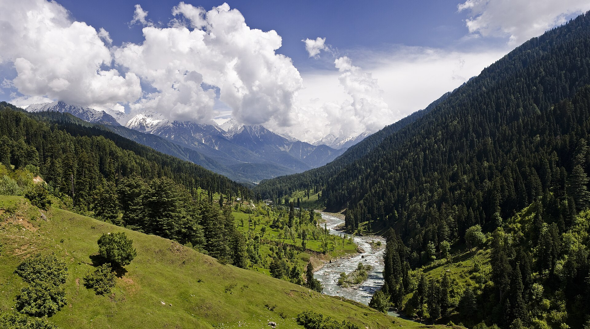
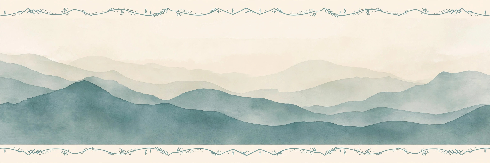
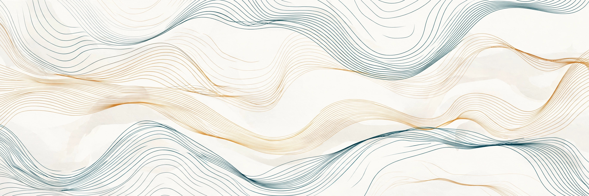
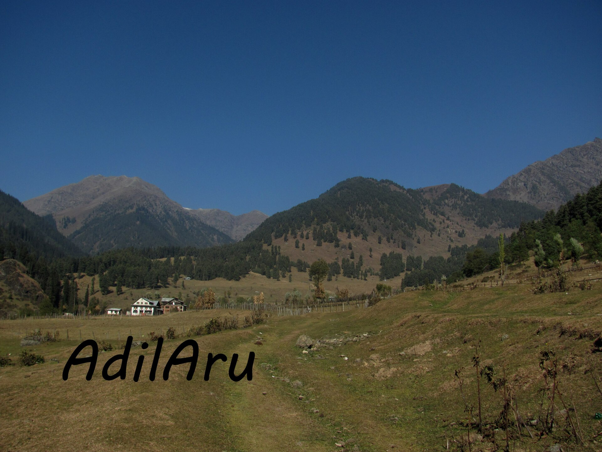
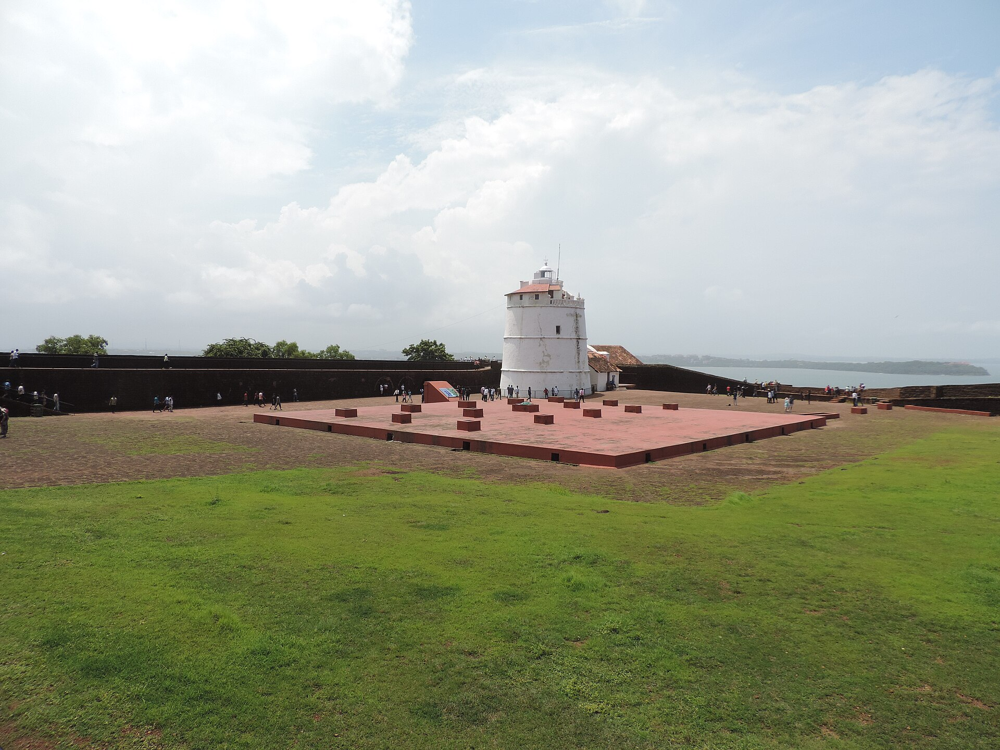
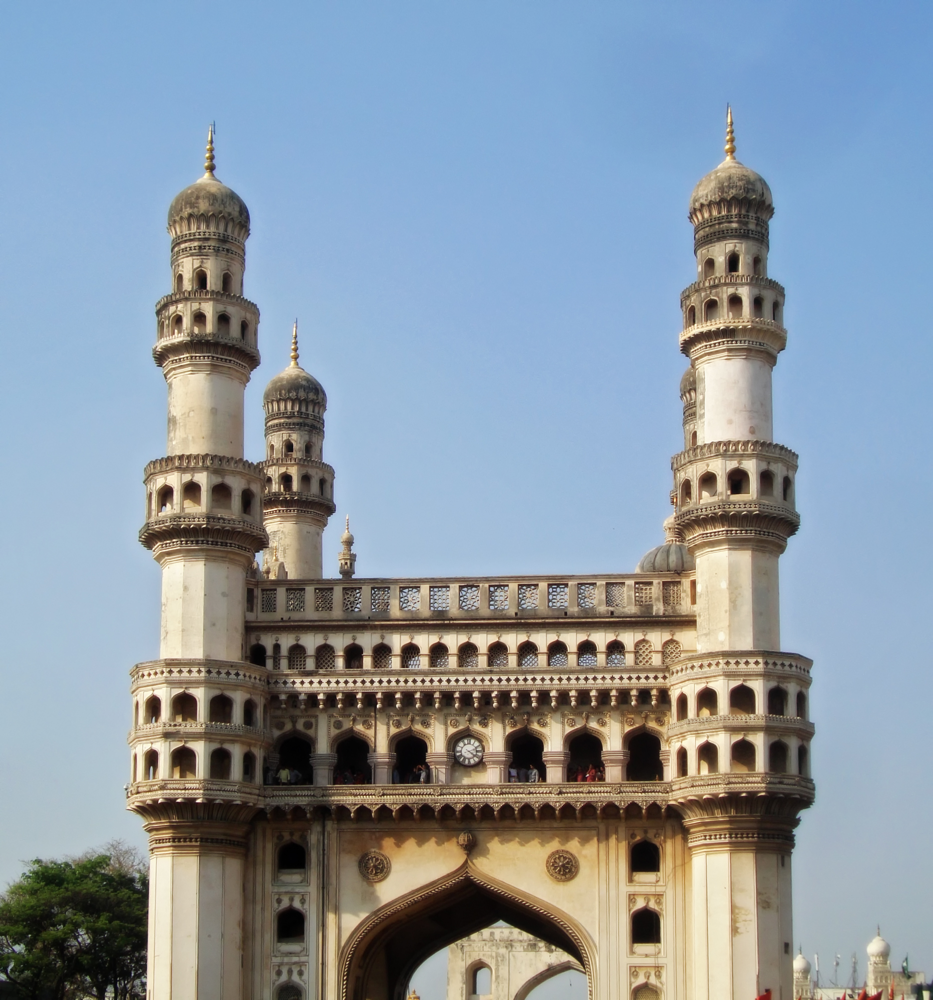
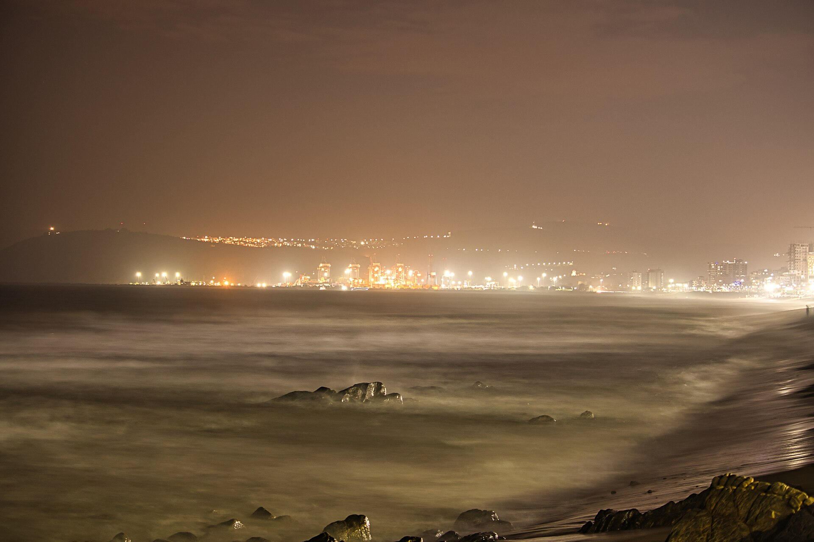
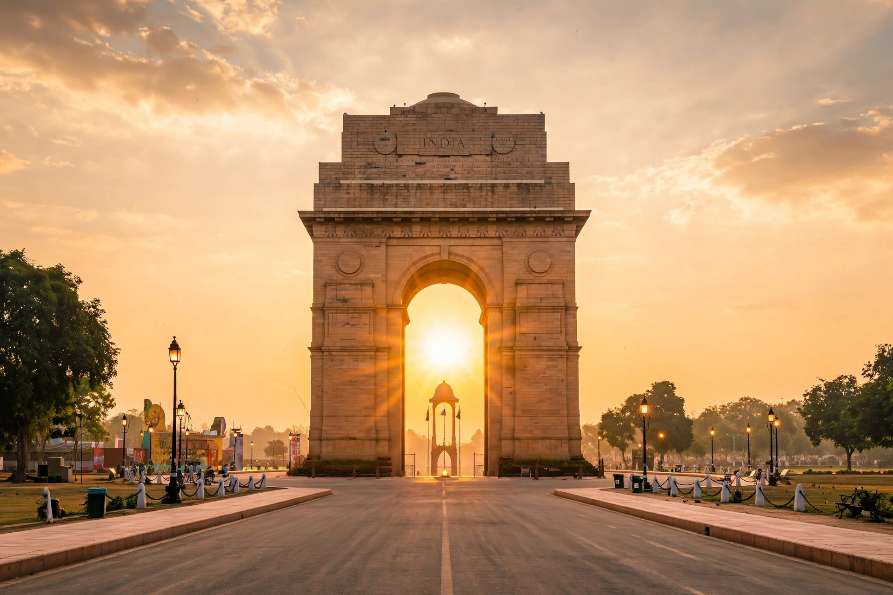
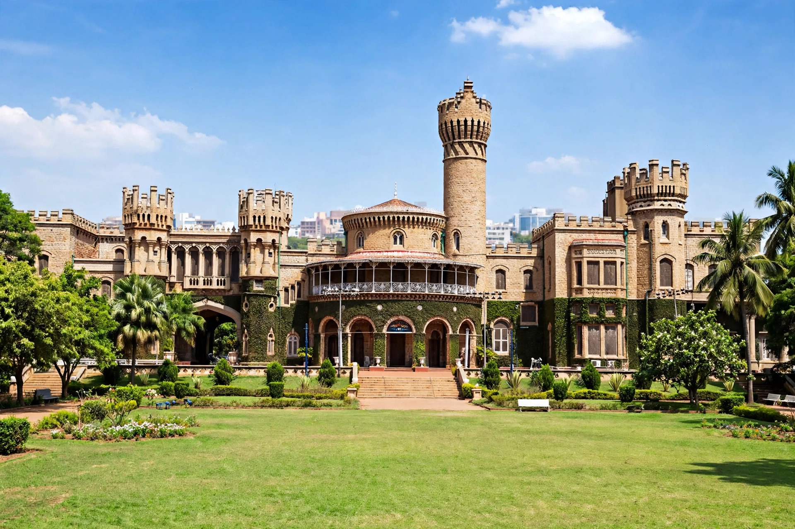

01
Choose your city
Select one of seven destinations and see the full interface adapt to that place.
AI trip planning with verified local guidance
Build a practical route, choose online help or an offline companion, and keep trip payments protected until the journey is complete.

Compare online and offline support before connecting.
How it works
Each step has a clear next action, with no dead buttons.
Select one of seven destinations and see the full interface adapt to that place.

See real place names arranged into a practical day-by-day structure.

Compare languages, expertise and support mode before booking.
Seven destination themes
Every city uses real repository photos and a distinct full-page weather treatment.

Snow-covered landscapes and mountain routes

Beaches, forts and heritage streets

Historic landmarks and food districts

Coastal views and city experiences
Sea link, colonial icons and city lights

Monuments, avenues and old-city bazaars

Palaces, parks and garden-city streets
People and proof
Four people, one build